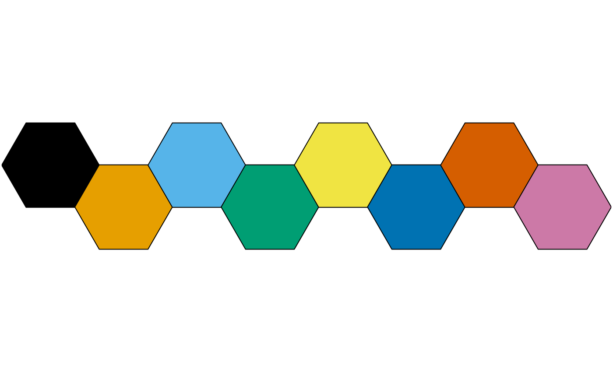
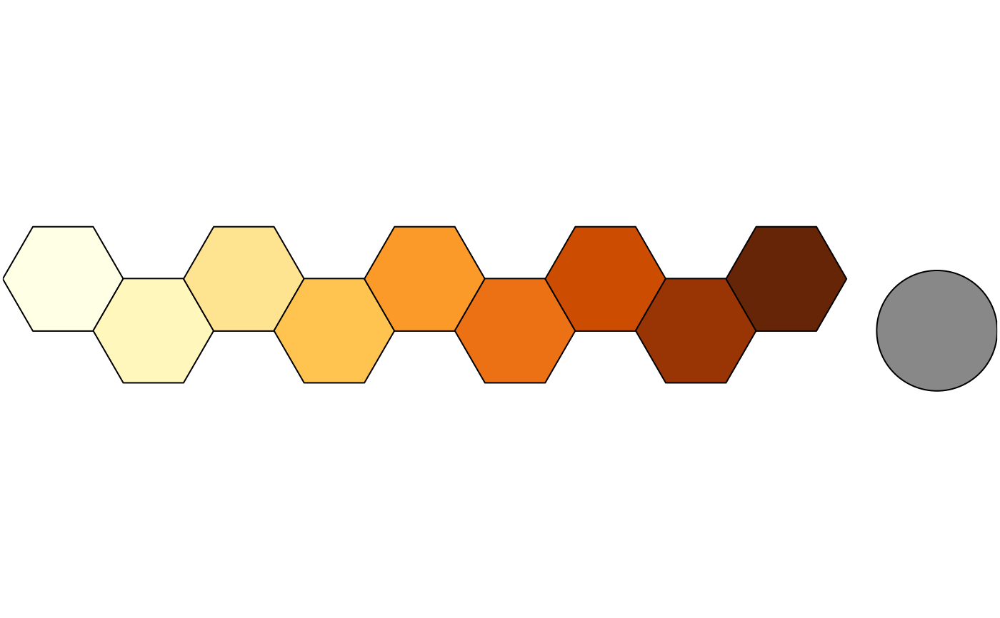
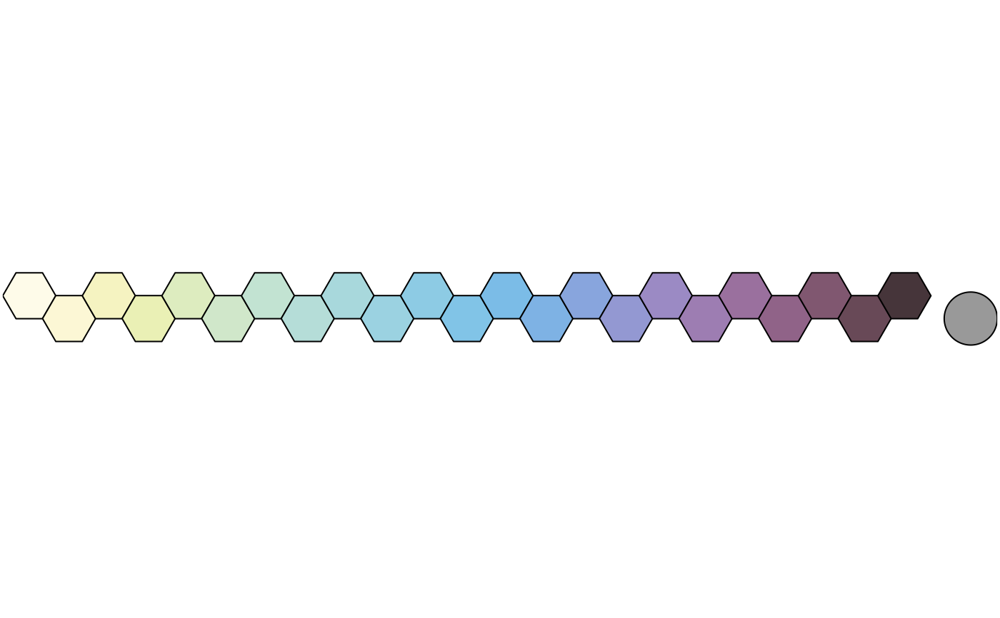
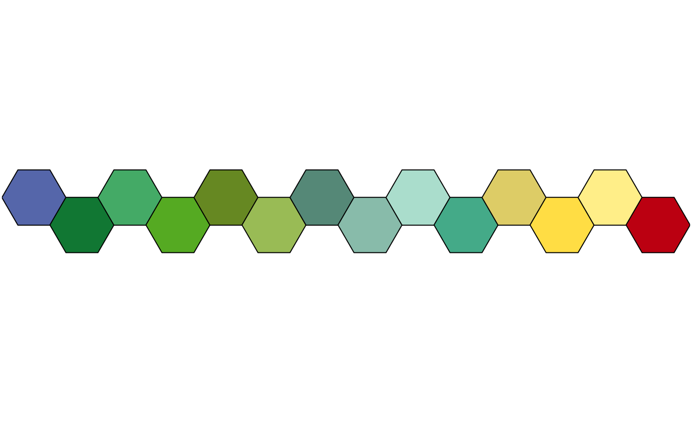
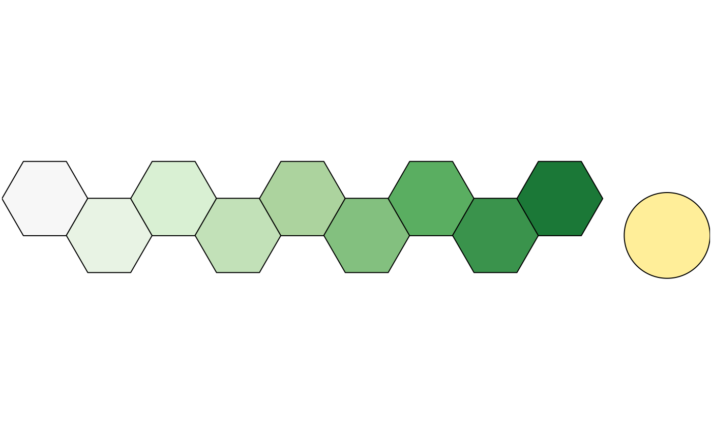

Provides qualitative, diverging and sequential color schemes.
colour(palette, reverse = FALSE, names = TRUE, lang = "en", force = FALSE, ...) color(palette, reverse = FALSE, names = TRUE, lang = "en", force = FALSE, ...)
Arguments
| palette | A |
|---|---|
| reverse | A |
| names | A |
| lang | A |
| force | A |
| ... | Further arguments passed to colorRampPalette. |
Value
A palette function with the following attributes, that when called with a single integer argument (the number of levels) returns a (named) vector of colors.
- palette
A
characterstring giving the name of the color scheme.- type
A
characterstring giving the corresponding data type. One of "qualitative", "diverging" or "sequential".- interpolate
A
logicalscalar: can the color palette be interpolated?- missing
A
characterstring giving the the hexadecimal representation of the color that should be used forNAvalues.- max
An
integergiving the maximum number of color values. Only relevant for non-interpolated color schemes.
For colour schemes that can be interpolated (diverging and sequential data),
the colour range can be limited with an additional argument. range allows
to remove a fraction of the colour domain (before being interpolated; see
examples).
Paul Tol's Color Schemes
The following palettes are available. The maximum number of supported colors is in brackets, this value is only relevant for the qualitative color schemes (divergent and sequential schemes are linearly interpolated).
- Qualitative data
bright (7), contrast (3), vibrant (7), muted (9), pale (6), dark (6), light (9).
- Diverging data
sunset (11), BuRd (9), PRGn (9).
- Sequential data
YlOrBr (9), iridescent (23), discrete rainbow (23), smooth rainbow (34).
Qualitative color schemes
According to Paul Tol's technical note, the bright, contrast,
vibrant and muted color schemes are colorblind safe.
The light color scheme is reasonably distinct for both normal or
colorblind vision and is intended to fill labeled cells.
The pale and dark schemes are not very distinct in either normal or
colorblind vision and should be used as a text background or to highlight
a cell in a table.
Refer to the original document for details about the recommended uses (see references).
Rainbow color scheme
As a general rule, ordered data should not be represented using a rainbow scheme. There are three main arguments against such use (Tol 2018):
The spectral order of visible light carries no inherent magnitude message.
Some bands of almost constant hue with sharp transitions between them, can be perceived as jumps in the data.
Colour-blind people have difficulty distinguishing some colours of the rainbow.
If such use cannot be avoided, Paul Tol's technical note provides two colour schemes that are reasonably clear in colour-blind vision. To remain colour-blind safe, these two schemes must comply with the following conditions:
- discrete rainbow
This scheme must not be interpolated.
- smooth rainbow
This scheme does not have to be used over the full range.
Okabe and Ito Colour Scheme
The following (qualitative) colour scheme is available:
- okabe ito
Up to 8 colours.
Scientific Colour Schemes
The following (qualitative) color schemes are available:
- stratigraphy
International Chronostratigraphic Chart (175 colours).
- land
AVHRR Global Land Cover Classification (14 colours).
- soil
FAO Reference Soil Groups (24 colours).
References
Jones, A., Montanarella, L. & Jones, R. (Ed.) (2005). Soil atlas of Europe. Luxembourg: European Commission, Office for Official Publications of the European Communities. 128 pp. ISBN: 92-894-8120-X.
Okabe, M. & Ito, K. (2008). Color Universal Design (CUD): How to Make Figures and Presentations That Are Friendly to Colorblind People. URL: https://jfly.uni-koeln.de/color/.
Tol, P. (2018). Colour Schemes. SRON. Technical Note No. SRON/EPS/TN/09-002, issue 3.1. URL: https://personal.sron.nl/~pault/data/colourschemes.pdf
Commission for the Geological Map of the World
Author
N. Frerebeau
Examples
## Okabe and Ito colour scheme colour("okabe ito")(8)#> #000000 #E69F00 #56B4E9 #009E73 #F0E442 #0072B2 #D55E00 #CC79A7



